Pour commencer
Ce qu'il faut savoir avant d'utiliser Petra, quel que soit votre rôle.
Ce que fait Petra
Petra suit le carburant d'une station-service d'un bout à l'autre : reçu (livraisons), stocké (cuves et jaugeages), vendu (index des pistolets) et encaissé (caisse remise par le pompiste). À chaque étape, Petra compare ce qui est attendu et ce qui est constaté. Tout écart est rattaché à une station, à un poste et à une personne.
Chaque station travaille sur son propre serveur, même sans Internet. Quand la connexion est là, la station envoie ses opérations au serveur central, où le propriétaire voit toutes ses stations.
Se connecter
- Ouvrez l'adresse de Petra donnée par votre responsable (à la station : l'adresse du serveur de la station).
- Saisissez votre identifiant (ou votre adresse e-mail) et votre mot de passe.
- Appuyez sur Se connecter.
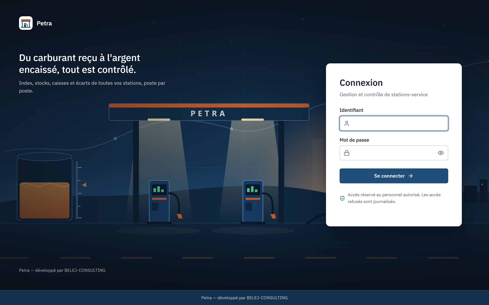
Se repérer dans l'écran
Le menu est à gauche. Il range les écrans en trois groupes — Exploitation (postes, stock, livraisons), Contrôle (alertes, rapports, journal d'audit) et Paramétrage (prix, stations, utilisateurs) — et n'affiche que ceux auxquels vous avez droit. Une pastille rouge indique ce qui vous attend : alertes ouvertes, postes à valider, synchronisation en attente. Votre nom, votre rôle et la déconnexion sont au pied du menu. La flèche en haut du menu le réduit en icônes.
L'en-tête montre l'état de la synchronisation avec le central, la cloche des alertes ouvertes et la station sur laquelle vous travaillez. Sur téléphone, le menu s'ouvre par l'icône à trois traits ; le pompiste dispose à la place d'une barre en bas de l'écran (Accueil, Mes postes, Prix).
| Indication dans l'en-tête | Signification |
|---|---|
| Synchronisé | Tout ce qui a été saisi est arrivé au serveur central. |
| En attente (n) | n opérations seront envoyées à la prochaine synchronisation (toutes les 5 minutes). |
| Hors ligne | Le central est injoignable. Continuez à travailler normalement : rien n'est perdu, tout partira au retour de la connexion. |
Les trois rôles
| Ce que vous pouvez faire | Propriétaire | Gérant | Pompiste |
|---|---|---|---|
| Voir toutes les stations (vue consolidée) | Oui | — | — |
| Créer les stations, les utilisateurs ; régler les seuils | Oui | — | — |
| Publier un prix ou un taux USD/CDF | Oui | — | — |
| Consulter le journal d'audit | Oui | — | — |
| Tableau de bord et rapports de sa station | Oui | Oui | — |
| Ouvrir un poste, recevoir la caisse, valider le poste | Oui | Oui | — |
| Jauger une cuve, recevoir une livraison, traiter une alerte | Oui | Oui | — |
| Voir son poste, déclarer une sortie non vendue, saisir ses index finaux | Oui | Oui | Oui |
Ces droits sont ceux fournis à l'installation. Le propriétaire peut les ajuster dans l'écran Rôles et permissions.
Les règles à connaître
| Règle | Ce que cela change pour vous |
|---|---|
| Rien ne s'efface | Une opération validée ne se modifie pas et ne se supprime pas. Un poste validé est définitif ; un écart se justifie, il ne se corrige pas en réécrivant les chiffres. Toute tentative est refusée et journalisée. |
| Les ventes viennent des index | Litres vendus = index final − index d'ouverture − sorties non vendues. Personne ne saisit « les litres vendus ». |
| Prix et taux datés | Chaque prix et chaque taux a une date d'effet. Une opération garde le prix et le taux en vigueur à son heure, même s'ils changent ensuite. |
| Les écarts sont en francs | Les dollars remis sont convertis en francs congolais au taux de la tranche de poste où ils ont été encaissés. |
| Un seul poste ouvert par station | Le poste suivant ne s'ouvre qu'après la clôture du précédent, et reprend ses index. |
Propriétaire
Voir toutes ses stations, décider des prix et du taux, contrôler les écarts.
Le tableau de bord consolidé
À la connexion, l'Accueil répond d'abord à trois questions : est-ce que tout va bien, où est le problème, que faire maintenant. En haut, choisissez la période (aujourd'hui, hier, 7 jours, ce mois, ou une période personnalisée) et la station.
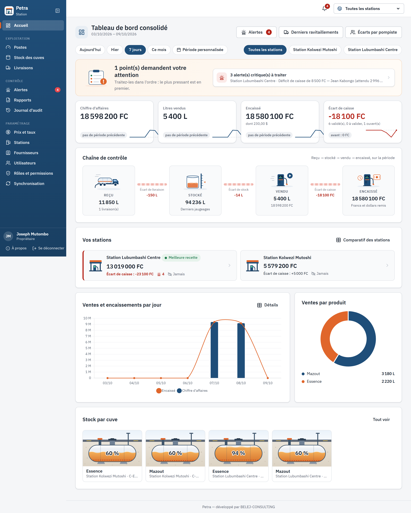
- L'état : « Tout est en ordre », ou le nombre de points à traiter, avec une carte par action — alertes critiques, postes à valider, cuves en stock bas. Un clic y mène.
- Quatre chiffres clés : chiffre d'affaires, litres vendus, argent encaissé, écart de caisse. Chacun montre son évolution par rapport à la période précédente de même durée et sa courbe sur sept jours.
- La chaîne de contrôle : reçu, stocké, vendu, encaissé, avec l'écart entre deux étapes ; il passe en rouge quand il manque quelque chose.
- Vos stations : une carte par station, avec sa recette, son écart, ses alertes et sa dernière synchronisation. Un clic ouvre son tableau de bord ; Comparatif des stations ouvre le tableau complet.
- Deux graphiques (ventes et encaissements par jour, ventes par produit) et les cuves en miniature.
Chaque bloc s'ouvre en détail : un clic sur un chiffre, une étape de la chaîne, une cuve, ou les boutons Derniers ravitaillements et Écarts par pompiste, affiche un tableau compact dans une fenêtre.
Les stations et leurs réglages
L'écran Stations liste vos stations. La fiche d'une station regroupe son installation et ses réglages.
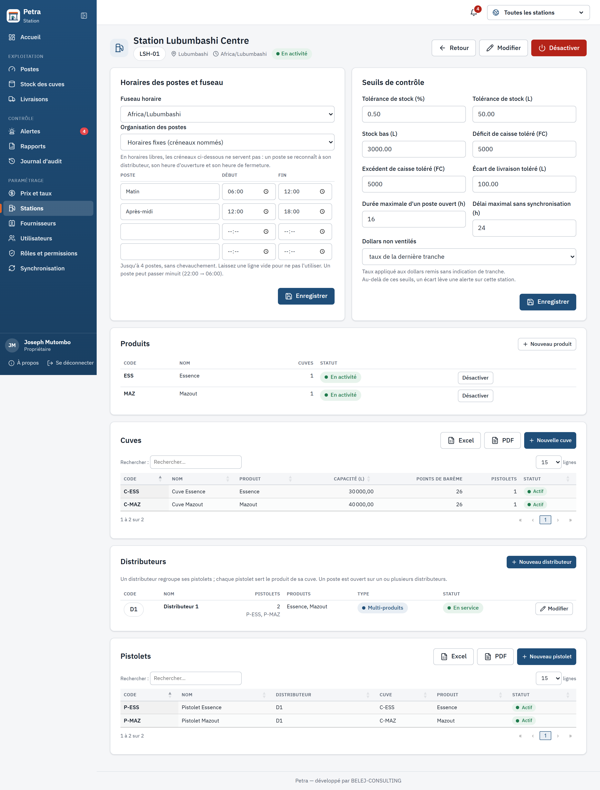
| Rubrique | Contenu |
|---|---|
| Horaires des postes | Au choix : horaires fixes — des plages nommées (par exemple Matin 06 h–12 h, Après-midi 12 h–18 h) proposées à l'ouverture d'un poste — ou horaires libres : un poste s'ouvre et se clôture quand on veut ; Petra enregistre son heure d'ouverture et son heure de fermeture. |
| Seuils | Tolérance de stock (en % et en litres), stock bas, tolérances de manquant et d'excédent de caisse, écart de livraison toléré, durée maximale d'un poste ouvert, délai maximal sans synchronisation. Au-delà d'un seuil, Petra lève une alerte. |
| Produits, cuves, pistolets | Chaque cuve contient un produit et possède un barème de jaugeage (hauteur en cm → volume en litres), saisi point par point ou importé d'un fichier CSV. Chaque pistolet est relié à une cuve. |
| Distributeurs | Un distributeur (la pompe) porte un code (D1, D2…) et regroupe ses pistolets, chacun avec son propre code. Chaque pistolet sert le produit de sa cuve : un distributeur est donc mono-produit ou multi-produits. Créez d'abord le distributeur, puis ses pistolets. Une fois qu'un index a été relevé sur un pistolet, il ne change plus de distributeur ni de produit : désactivez-le et créez-en un autre. |
Les utilisateurs et les rôles
Dans Utilisateurs, créez un compte par personne, choisissez son rôle et attribuez-lui sa ou ses stations. Un compte désactivé ne peut plus se connecter ; son historique reste intact.
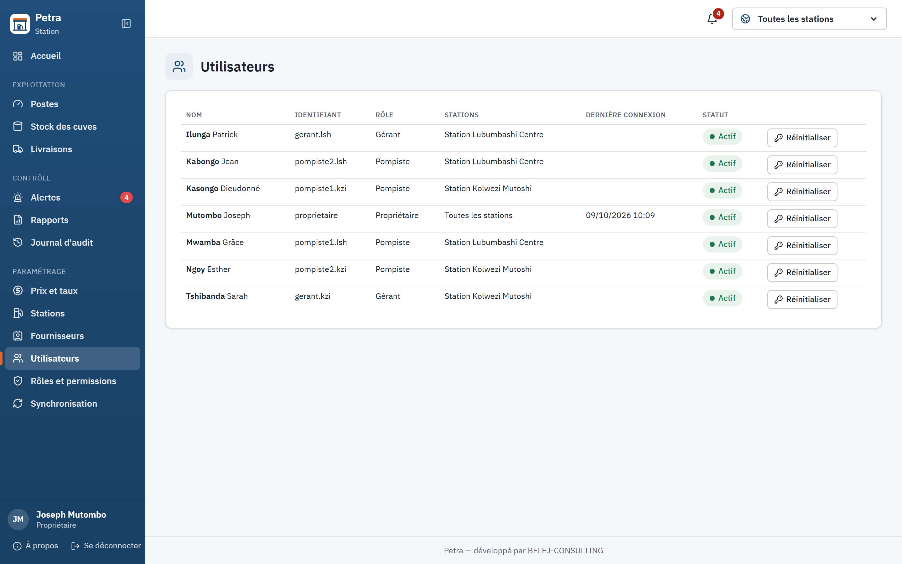
L'écran Rôles et permissions montre, pour chaque rôle, ce qu'il autorise. Modifiez-le avec prudence : chaque changement est inscrit au journal d'audit.
Les prix et le taux USD/CDF
L'écran Prix et taux affiche, pour la station choisie dans l'en-tête, le prix en vigueur de chaque produit, le taux du dollar et l'historique de toutes les versions.
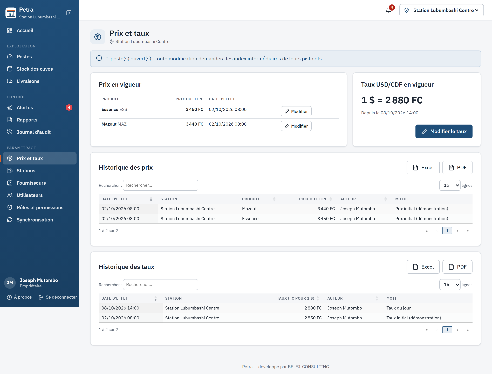
Publier un nouveau prix ou un nouveau taux
- Choisissez la station dans l'en-tête, puis ouvrez Prix et taux.
- Appuyez sur le bouton de nouveau prix du produit, ou de nouveau taux.
- Saisissez la nouvelle valeur et, si vous le souhaitez, un motif.
- Si un poste est ouvert, Petra demande l'index de chaque pistolet à cet instant : faites-les relever et saisissez-les.
- Appuyez sur Publier. La nouvelle valeur prend effet immédiatement.
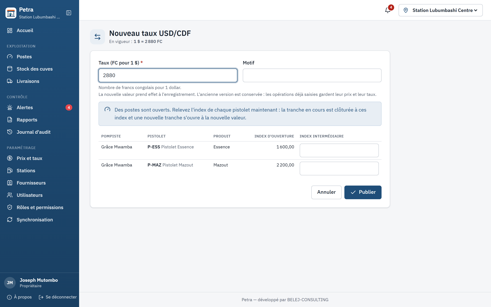
Clôturer totalement un poste
Dans l'écran Postes, le propriétaire dispose d'un bouton Clôturer totalement sur chaque poste non validé. Il réunit en une fenêtre les index finaux (si le poste est encore ouvert) et l'argent reçu en francs et en dollars, puis valide le poste — sans attendre une seconde personne.
Les rapports
L'écran Rapports propose trois rapports, pour une station ou pour toutes : journalier, mensuel et par poste. Chacun s'exporte en Excel, en PDF, ou s'imprime ; il porte la station, la période, la date de génération et votre nom.
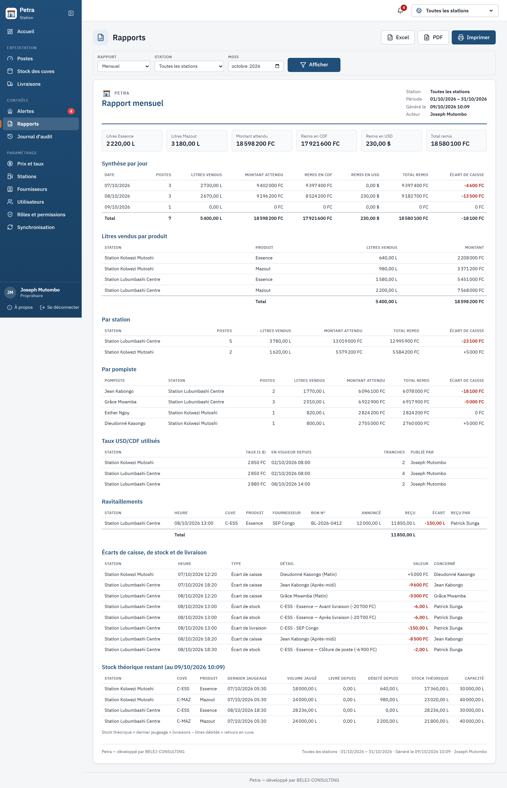
Le détail du rapport journalier et des exports est décrit dans la partie du gérant (Les rapports et leurs exports).
Les alertes et le journal d'audit
L'écran Alertes réunit les alertes de toutes vos stations, avec le nombre d'alertes ouvertes par station. La signification de chaque alerte est donnée en annexe.
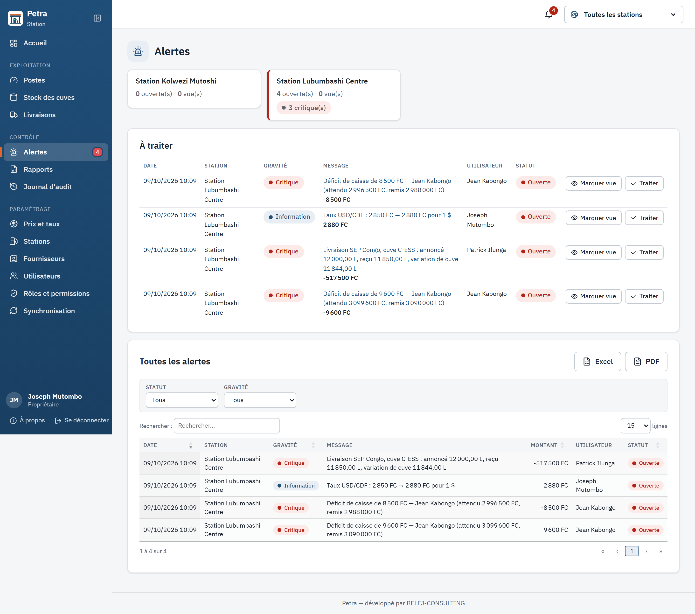
Le Journal d'audit garde la trace de chaque action : qui, quoi, quand, sur quelle station, avec les valeurs avant et après. Il se filtre par objet, par action et par période. Personne ne peut le modifier ni l'effacer, pas même le propriétaire.
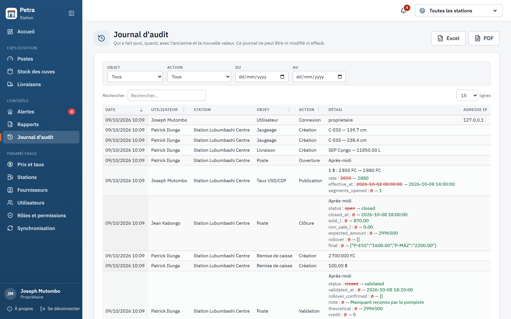
Gérant
Tenir la station au quotidien : postes, caisse, stock, livraisons, alertes.
Le tableau de bord de la station
L'Accueil résume votre station sur la période choisie : d'abord ce qui demande une action (poste à valider, cuve en stock bas, alerte critique), puis quatre chiffres clés avec leur évolution, la chaîne de contrôle, deux graphiques et vos cuves. Le taux du dollar en vigueur est rappelé sous le titre. Un clic sur un chiffre, une étape ou une cuve ouvre son détail en tableau dans une fenêtre.
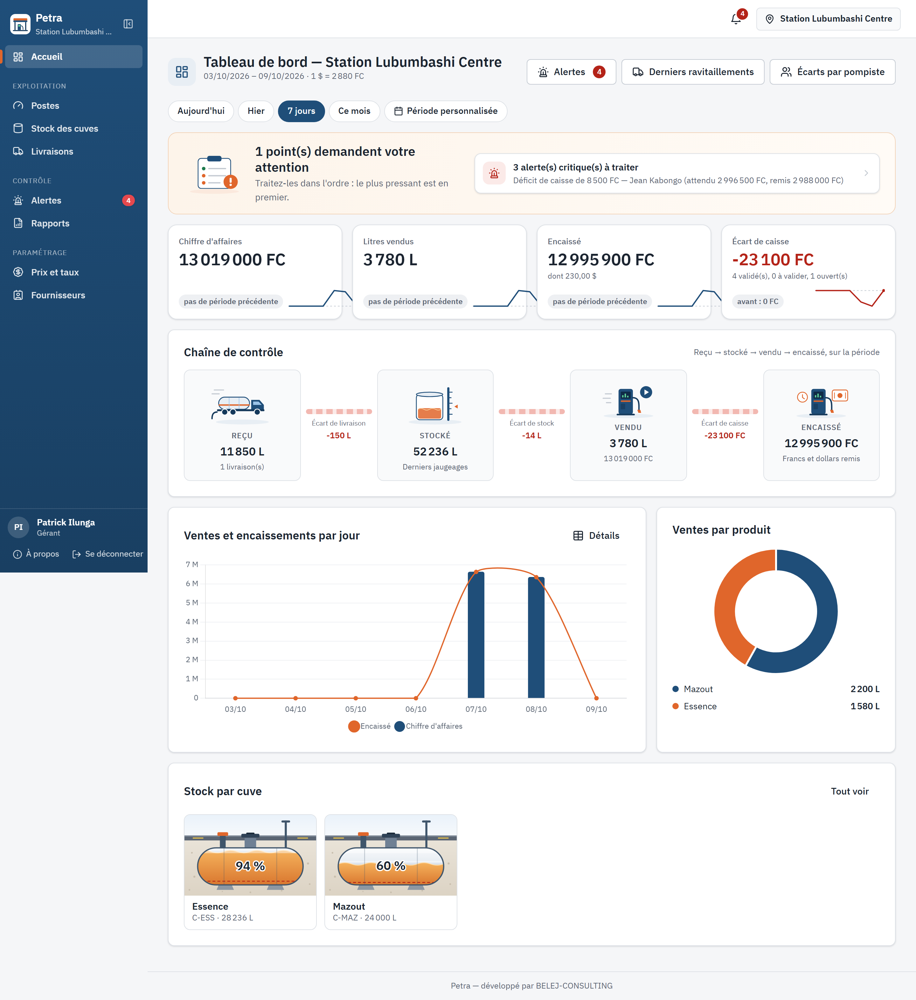
Ouvrir un poste
- Appuyez sur Ouvrir un poste, en haut du menu.
- Choisissez le pompiste et, en horaires fixes, le libellé du poste (Matin, Après-midi…).
- Cochez le ou les distributeurs confiés à ce pompiste. Les autres restent libres : un second pompiste peut tenir son propre poste en même temps, avec ses index et sa caisse.
- Vérifiez l'index d'ouverture de chaque pistolet. Petra reprend l'index final du poste précédent ; au tout premier poste, lisez-le au compteur.
- Enregistrez. Le pompiste voit aussitôt son poste.
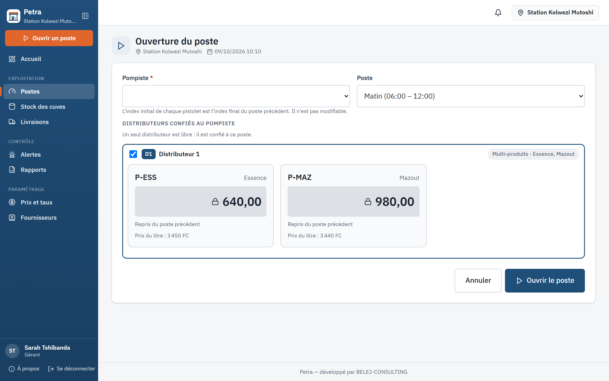
Petra refuse l'ouverture, en expliquant pourquoi, si un poste est déjà ouvert sur la station, si un produit n'a pas de prix ou si aucun taux USD/CDF n'est publié.
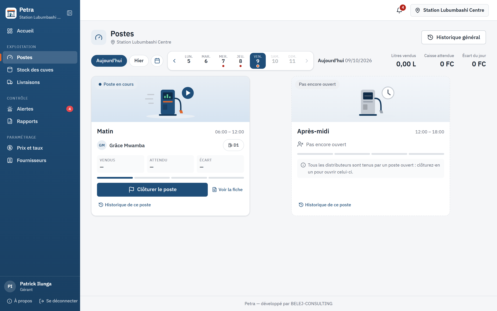
L'écran Postes montre la journée : une carte par créneau (Matin, Après-midi…) — ou par poste en horaires libres et pour chaque poste tenu en parallèle —, avec le pompiste, ses distributeurs (D1, D2…), les litres vendus, le montant attendu et l'écart. Le bouton de la carte est toujours l'étape suivante : Ouvrir, Clôturer, Recevoir la caisse, puis Valider. Il ouvre une fenêtre de saisie ; avant l'enregistrement, une étape de vérification récapitule ce que vous avez saisi. La carte se met à jour aussitôt, sans recharger la page. Un clic sur la carte ouvre le détail du poste (ventes, caisse, événements) et Voir la fiche mène à la fiche complète. Historique de ce poste liste les derniers postes du même créneau avec la courbe de leurs écarts, et Historique général, en haut à droite, ouvre la liste complète avec ses filtres et ses exports. En haut de la page, choisissez la journée : Aujourd'hui, Hier, le calendrier, ou la semaine jour par jour. Le point sous chaque jour indique son état : vert sans manquant, rouge avec manquant, orange s'il reste un poste à solder.
Recevoir la caisse et valider le poste
Quand le pompiste a saisi ses index finaux, le poste passe « À valider ». Sa fiche montre, par tranche et par pistolet, les index, les litres vendus et la valeur des ventes.
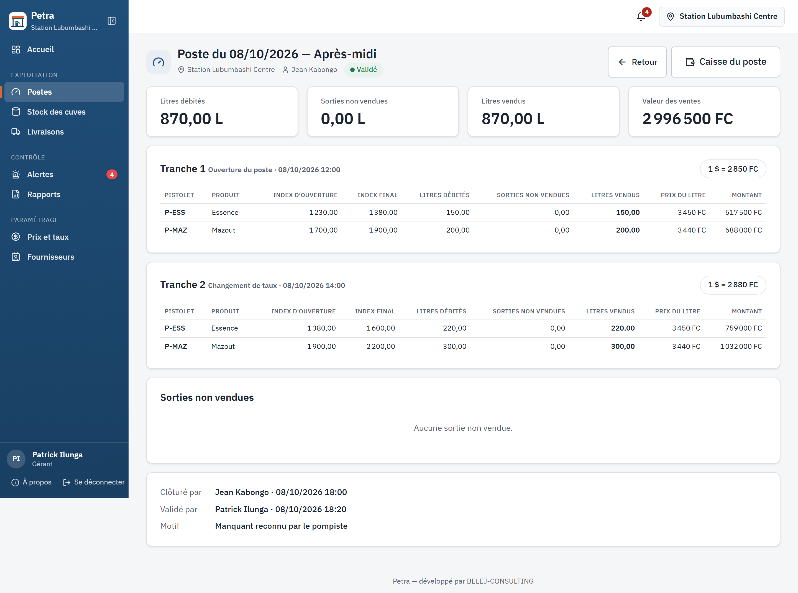
La caisse du poste
- Depuis la fiche du poste, ouvrez Caisse du poste.
- Enregistrez l'argent remis : un montant en francs, et un montant en dollars s'il y en a. Pour les dollars, vous pouvez indiquer la tranche où ils ont été encaissés ; sinon Petra applique la règle réglée pour la station.
- Ajoutez, s'il y a lieu, les ventes à crédit (client, bon, litres) et les dépenses de caisse : elles diminuent la caisse attendue.
- Contrôlez l'écran : caisse attendue, caisse remise, et l'écart.
- Revenez à la fiche du poste et appuyez sur Valider.
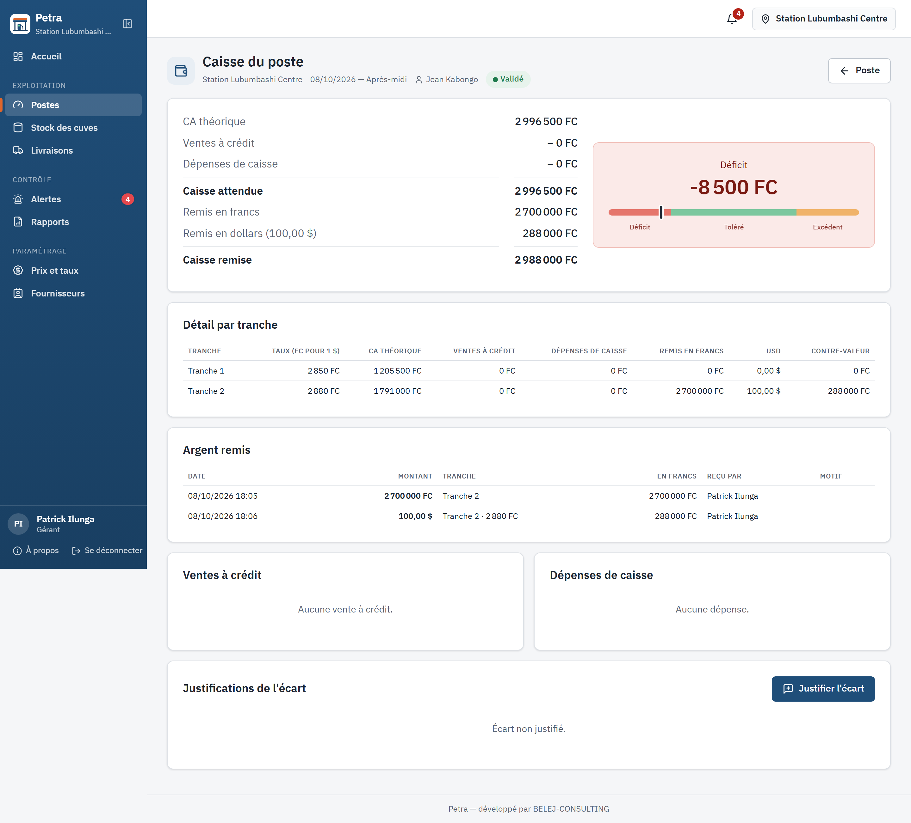
Justifier un écart
Si l'écart dépasse la tolérance de la station, Petra lève une alerte (déficit ou excédent de caisse). Sur l'écran de la caisse, Justifier l'écart enregistre l'explication et le montant qu'elle couvre (billets refusés, erreur de rendu reconnue…). L'écart constaté reste au dossier ; la justification s'y ajoute.
Le stock des cuves
L'écran Stock des cuves montre une carte par cuve : la cuve dessinée avec son niveau, son pourcentage de remplissage et le trait rouge du seuil de stock bas, puis un résumé — le produit, le stock théorique en litres et l'autonomie estimée au rythme de vente des sept derniers jours. En haut de la page : le stock total, l'autonomie la plus courte et le nombre de cuves en stock bas.
Plus de détails ouvre une fenêtre qui explique d'où vient le chiffre (dernier jaugeage + livraisons − litres débités + retours en cuve), donne le dernier écart et mène à l'Historique de la cuve. Historique général, en haut à droite, ouvre tous les jaugeages avec leurs exports.
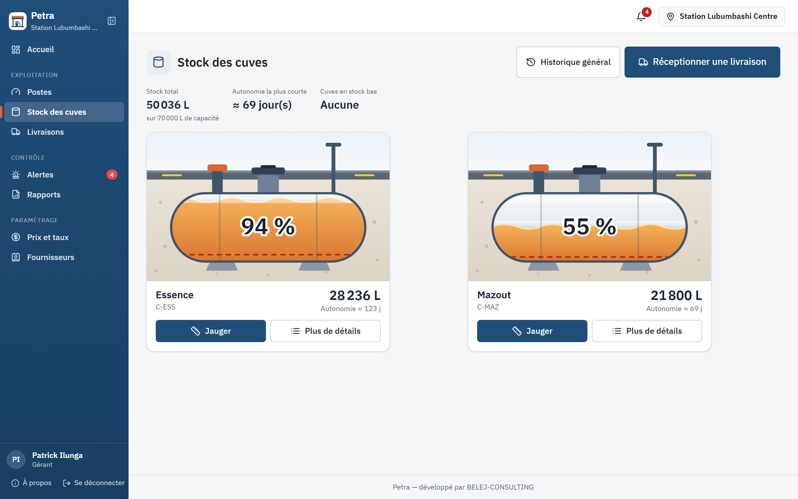
Enregistrer un jaugeage
- Plongez la jauge et lisez la hauteur en centimètres (et la hauteur d'eau, si vous la relevez).
- Sur la carte de la cuve, appuyez sur Jauger : une fenêtre s'ouvre. Saisissez la hauteur et choisissez la nature du jaugeage (ouverture, clôture, contrôle).
- Vérifiez le récapitulatif, puis enregistrez. Petra convertit la hauteur en litres avec le barème, la compare au stock théorique et affiche l'écart ; la carte se met à jour aussitôt.
Les livraisons
- Avant le dépotage, jaugez la cuve et notez la hauteur.
- Ouvrez Livraisons, puis la nouvelle livraison.
- Choisissez le fournisseur dans la liste et la cuve, puis saisissez le numéro du bon, le camion et le chauffeur ; la quantité commandée, la quantité annoncée par le bon et la quantité reçue.
- Après le dépotage, jaugez de nouveau et saisissez les deux hauteurs (avant et après).
- Joignez, si possible, la photo du bon de livraison, puis enregistrez.
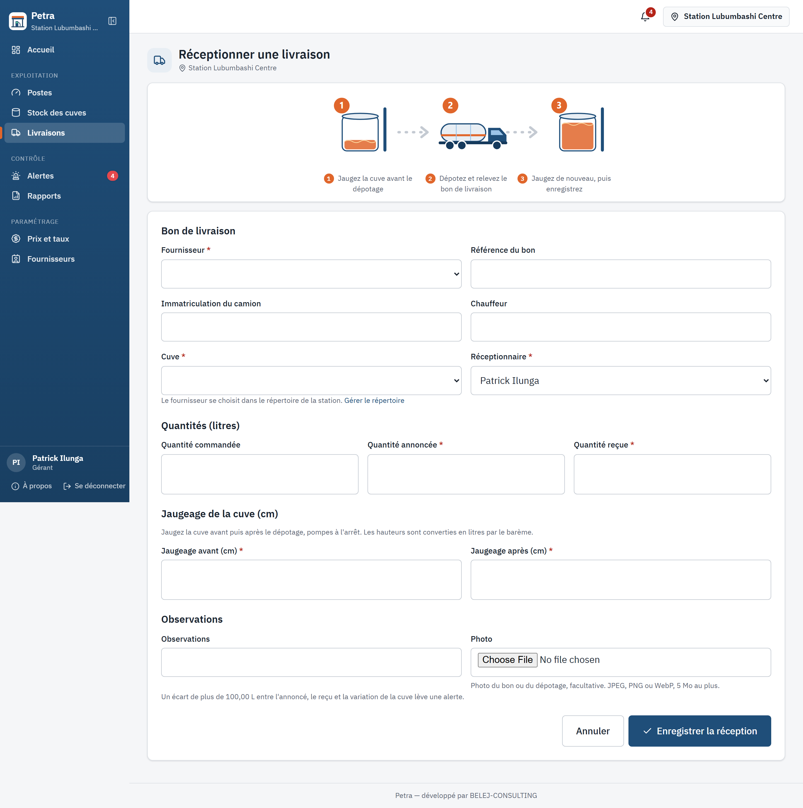
Le fournisseur se choisit dans le répertoire des fournisseurs de la station (menu Fournisseurs). Un nouveau fournisseur se présente : ouvrez Fournisseurs, puis Nouveau fournisseur, saisissez son nom, son contact et son téléphone ; il est aussitôt proposé à la réception. Un fournisseur avec lequel vous ne travaillez plus se désactive : il disparaît de la liste, ses livraisons passées restent.
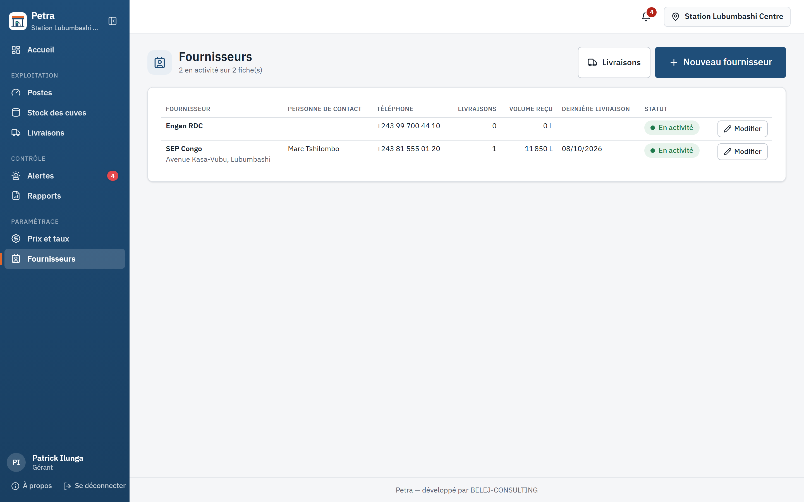
Petra calcule deux écarts : entre l'annoncé et le reçu (ce que le fournisseur doit), et entre le reçu et la montée réelle de la cuve. Au-delà de la tolérance de la station, une alerte d'écart de livraison est levée à votre nom.
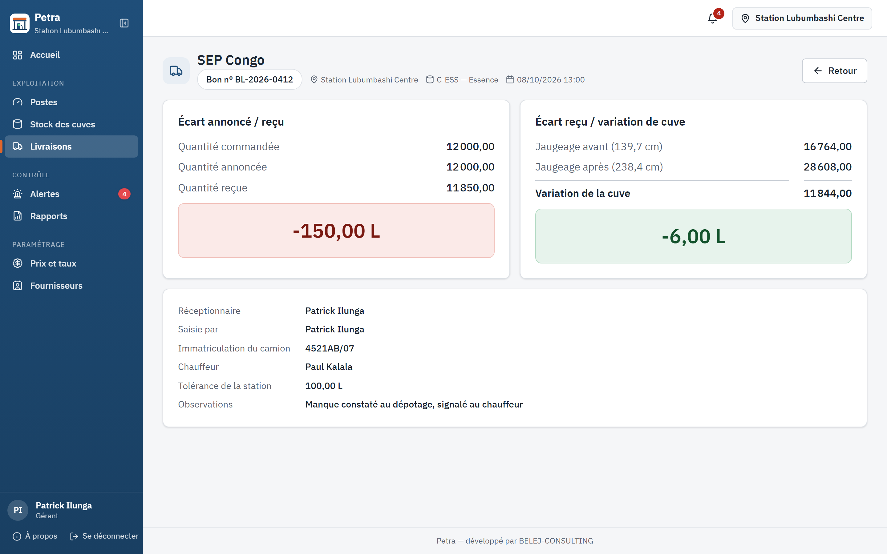
Traiter les alertes
La cloche de l'en-tête indique le nombre d'alertes ouvertes. L'écran Alertes les liste, les plus graves d'abord.
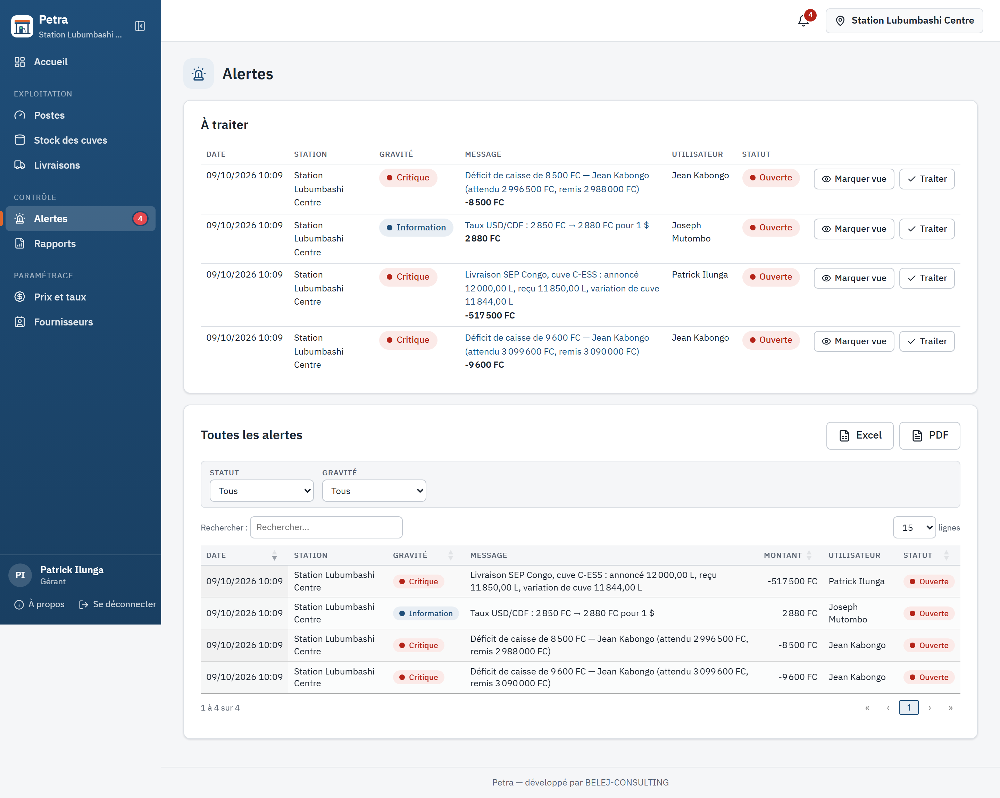
- Ouvrez l'alerte pour lire son détail : poste, personne concernée, montant ou volume, seuil dépassé.
- Marquez-la vue dès que vous en avez pris connaissance.
- Une fois la cause comprise, marquez-la traitée en écrivant ce qui a été fait.
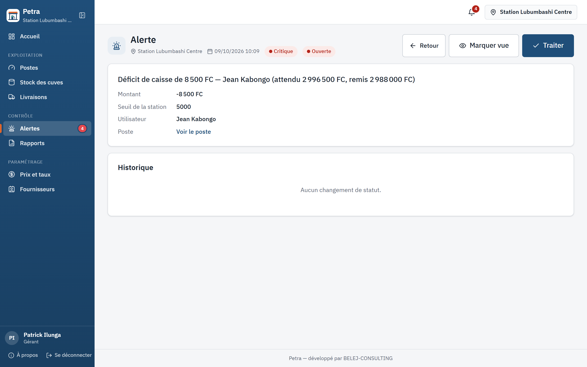
Les rapports et leurs exports
Dans Rapports, choisissez le rapport, la journée ou le mois, puis Afficher. Le rapport journalier répond à dix questions :
| N° | Question | Section du rapport |
|---|---|---|
| 1–2 | Combien de litres d'Essence et de Mazout ont été vendus ? | Litres vendus par produit |
| 3–5 | Quel montant était attendu ? Combien a été remis en francs, en dollars ? | Montant attendu et remis, par poste |
| 6 | Quels taux ont été utilisés ? | Taux USD/CDF utilisés |
| 7 | Quel stock théorique reste-t-il ? | Stock théorique restant, par cuve |
| 8 | Quels ravitaillements ont été reçus ? | Ravitaillements |
| 9 | Quels écarts et anomalies ? | Écarts de caisse, de stock, de livraison, alertes |
| 10 | Qui est responsable de chaque opération ? | Journal des opérations de la journée |
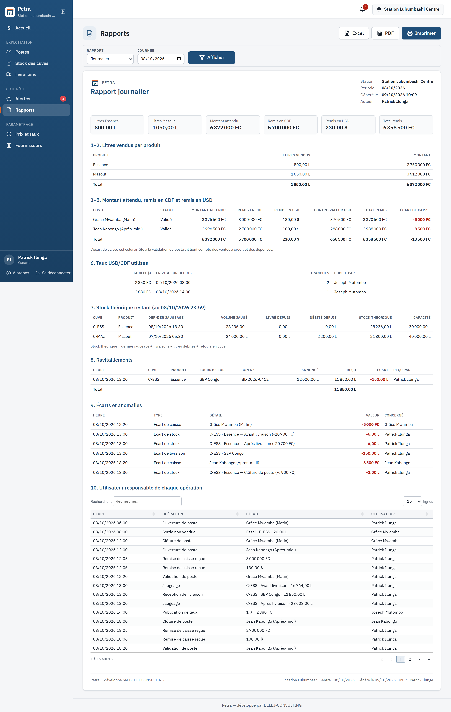
Les trois boutons en haut à droite produisent le même rapport, avec les mêmes chiffres, en Excel, en PDF ou sur papier (Imprimer).
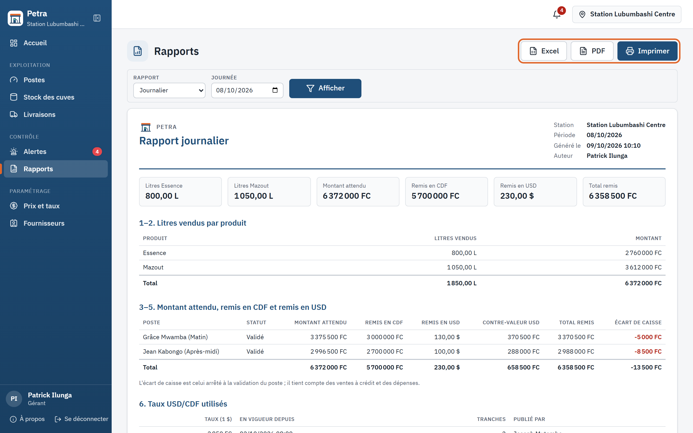
Le rapport par poste détaille un poste : relevés par pistolet et par tranche, taux, remises, sorties non vendues, ventes à crédit, dépenses, anomalies et responsables. Choisissez la journée, puis le poste.
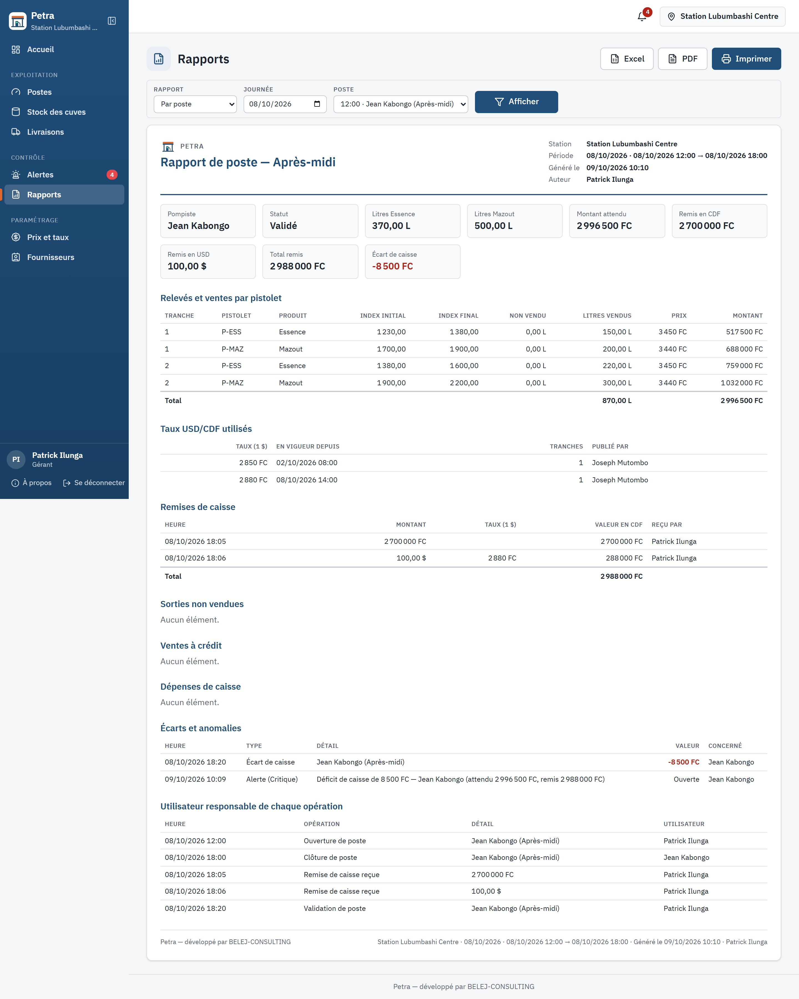
Pompiste
Votre poste, sur téléphone ou sur tablette : trois gestes à connaître.
Retrouver son poste
Le gérant ouvre votre poste et note l'index de départ de chaque pistolet. Après connexion, appuyez sur Mes postes, dans la barre en bas de l'écran (ou sur Voir mes postes) : vous ne voyez que vos postes.
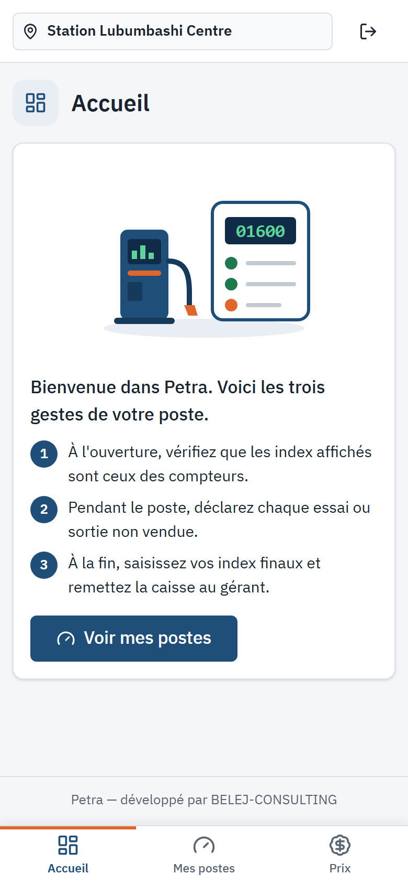
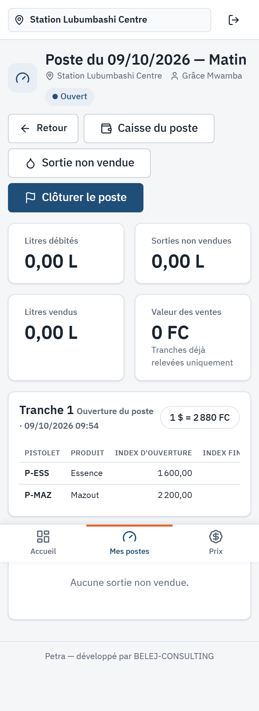
Vérifiez que les index d'ouverture affichés sont bien ceux des compteurs. S'ils diffèrent, prévenez le gérant avant de servir : c'est sur ces index que vos ventes seront calculées.
Déclarer une sortie non vendue
Tout litre qui sort du pistolet sans être vendu doit être déclaré, sinon il vous sera compté comme vendu : essai de pompe, étalonnage, usage interne, retour en cuve.
- Sur votre poste, appuyez sur Sortie non vendue.
- Choisissez le pistolet et la nature de la sortie.
- Saisissez le volume en litres et le motif.
- Appuyez sur Enregistrer.
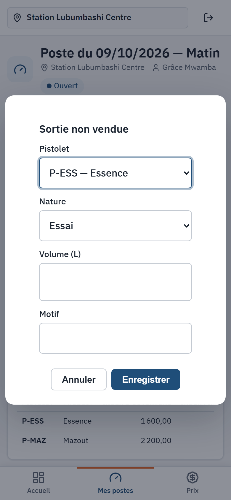
Clôturer son poste
- À la fin du poste, appuyez sur Clôturer le poste.
- Lisez l'index final de chaque pistolet au compteur et saisissez-le.
- Si un compteur est arrivé au bout et reparti de zéro, cochez « Le compteur est repassé par zéro » : le gérant le confirmera.
- Appuyez sur Clôturer le poste, puis remettez votre caisse au gérant.
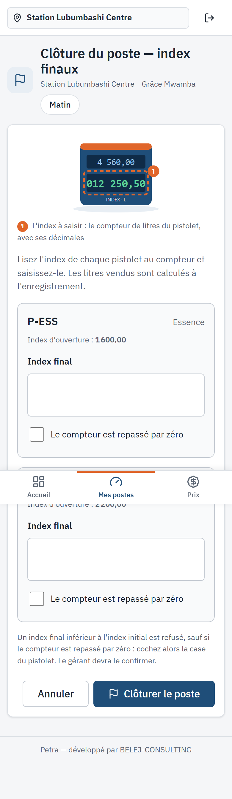
Petra calcule alors vos litres vendus et le montant attendu. Le gérant compte l'argent devant vous, l'enregistre et valide le poste. L'écart éventuel est à votre nom : assistez au comptage.
Annexes
Les alertes
| Alerte | Quand est-elle levée ? | Rattachée à |
|---|---|---|
| Déficit ou excédent de caisse | À la validation d'un poste, si l'écart dépasse la tolérance de la station. | Station, poste, pompiste |
| Écart de stock | À un jaugeage, si le volume mesuré s'écarte du stock théorique au-delà de la tolérance. | Station, cuve, auteur du jaugeage |
| Stock bas | Quand le stock d'une cuve passe sous le seuil de la station (au jaugeage ou au contrôle quotidien). | Station, cuve |
| Écart de livraison | À la réception, si l'écart avec le bon ou avec la montée de la cuve dépasse la tolérance. | Station, livraison, réceptionnaire |
| Changement de prix ou de taux | À chaque publication (information). | Station, auteur |
| Passage à zéro d'un compteur | Quand un pompiste déclare qu'un compteur est reparti de zéro. | Station, poste |
| Poste non clôturé | Au contrôle quotidien, si un poste est ouvert depuis plus longtemps que la durée réglée (16 h par défaut). | Station, poste, pompiste |
| Station non synchronisée | Au contrôle quotidien, sans synchronisation réussie depuis le délai réglé (24 h par défaut). | Station |
| Conflit de synchronisation | Quand le central et la station ne s'accordent pas sur une ligne. Rien n'est écrasé. | Station |
| Accès refusé | Tentative d'ouvrir un écran ou une station non attribués. | Station, utilisateur |
| Modification refusée | Tentative d'écrire dans un poste clôturé ou validé. | Station, poste, utilisateur |
Lexique
- Poste
- Période de travail d'un pompiste, de l'ouverture (index de départ) à la clôture (index finaux), puis à la validation par le gérant.
- Tranche
- Partie d'un poste à prix et taux constants. Un changement de prix ou de taux en cours de poste ouvre une nouvelle tranche.
- Distributeur
- La pompe : elle porte un code et regroupe un ou plusieurs pistolets, d'un seul produit ou de plusieurs.
- Index
- Valeur du compteur d'un pistolet, en litres.
- Sortie non vendue
- Carburant débité sans vente : essai, étalonnage, usage interne, retour en cuve.
- Caisse attendue
- Valeur des ventes, moins les ventes à crédit et les dépenses de caisse.
- Écart de caisse
- Caisse remise − caisse attendue, en francs congolais. Négatif : déficit ; positif : excédent.
- Jaugeage
- Mesure de la hauteur de carburant dans une cuve, convertie en litres par le barème.
- Barème
- Table de correspondance hauteur (cm) → volume (L) propre à chaque cuve.
- Stock théorique
- Dernier jaugeage + livraisons − litres débités + retours en cuve.
- Synchronisation
- Envoi des opérations de la station au serveur central, et réception des comptes, prix et taux décidés au central.
Petra — développé par BELEJ-CONSULTING